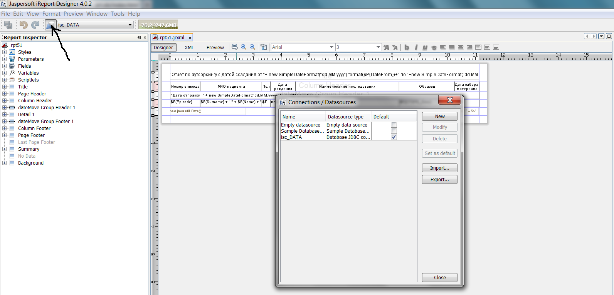

| Руководство для пользователя |
| Настройки сервера Cache для работы с Jasperreports |
| Описание внутренней структуры |
Для создания отчета необходимо:
В настройках iReport (Tools->Options-Classpath: добавить jar-библиотеку
Для установки связи с БД Cache необходимо в iReport создать новый источник данных (см. рисунок)
 Параметры:Для проверки связи можно нажать кнопочку Test
В ЛИС Классификатор->Система->Отчет-Настройка отчетов в поле в левом нижнем углу ввести Код отчета (имя файла jrxml без расширения) и нажать Tab,
к уже имеющейся информации добавить:
в поле DLL name - PRTCLNRUS.clsStart, в поле Группа отчетов - указать подменю, в котором будет вызываться данный отчет.
Для сохранения надо нажать кнопку Обновить
В dll делается вызов программы Cache для получения URL $$getReportURL^TCLEx.VBReport() (имя программы для обработки отчета берется из ^TMP("REPORTSPB",$j)) и с помощью ShellExecute запускается браузер
ErrorLevel = ShellExecute(vbNull, "open", reportURL, vbNull, vbNull, 1)
В качестве URL $$getReportURL^TCLEx.VBReport() возвращает строку вызова класса ReportZEN.genRpt.cls с параметрами user=,fileJRXML=,reportKey= (например, http://localhost:57772/csp/BION/ReportZEN.genReportJasper.cls?user=demo&fileJRXML=REPORT22.jrxml&reportKey=REPORT22)
Класс ReportZEN.genJasperReport.cls генерит окно для ввода параметров отчета по описанию, данному в шаблоне fileJRXML
При нажатии кнопочки Печать запускается программа запуска генерации отчета Jasperreports, в которую передается название шаблона отчета, массив параметров для отчета и имя и путь к сгенерированному файлу отчета
После создания файла отчета с помощью класса ReportZEN.downloadFile.cls поток с содержимым файла отчета передается на компьютер клиента и открывается в браузере